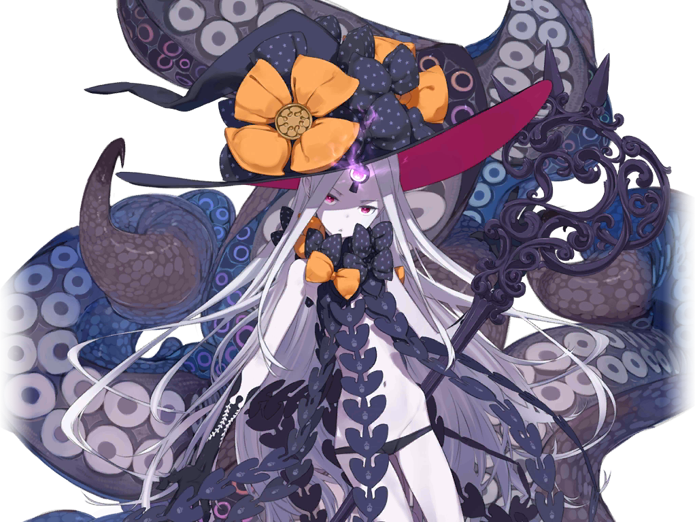

You decide resist and fight back.
You decide resist and fight back. The guards grab you and fought back until you were too weak to fight back. They drag your beaten up body towards the town square. You are embarrassed to see neighbors and friends peering out and staring at you from windows and doors. As you follow the path, you realize that you have seen others who have followed the same path when they were escorted to court. You fear that you might become the next victim in the witch trials.
Next
